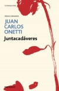
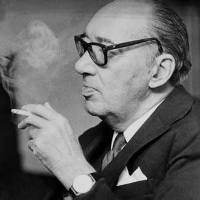

Novela

+Juntacadáveres
Es la historia del triunfo y la caída de Larsen, de la breve gloria de su prostíbulo, pero también la de un grupo de personajes sólo parcialmente revelados que ocupan su lugar preciso en el gran plano de Santa María.
Creador

+Juan Carlos Onetti (1930-1933)
Su labor literaria comienza en Buenos Aires, donde colabora en los diarios La Prensa y La Nación de Buenos Aires. En 1935 escribe Los niños en el bosque y Tiempo de abrazar, que no se publicaron hasta casi cuarenta años después. En 1939 publica su primer libro, El Pozo, y es nombrado secretario de redacción del semanario Marcha.